How to Position Objects in the Microsoft Whiteboard App (Windows 11)
This tutorial covers:
How to Rotate an Object:
How to Bring an Object Forward:
How to Send an Object Backward:
How to Lock an Object
How to Unlock an Object:
No time to scroll down? Click through these tutorial slides:
Follow along with a video tutorial:
How to Rotate an Object With Mouse
- Step 1: First select an object. Hover the mouse over one corner, or sizing handle, of the object until the cursor becomes a circular arrow. Click and drag to rotate the object. 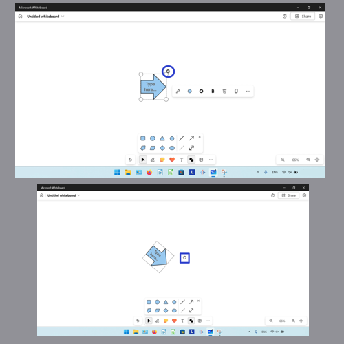
How to Rotate an Object With Keyboard
- Step 1: Select an object. On the keyboard press Alt + left arrow key to rotate the object counterclockwise. Press Alt + right arrow key to rotate the object clockwise. 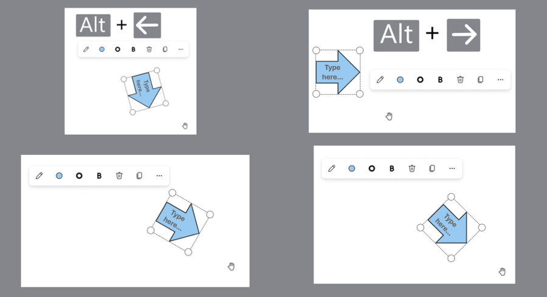
How to Bring an Object Forward With Click
- Step 1: First select an object. In the menu that opens, click the “More” or “…” button. 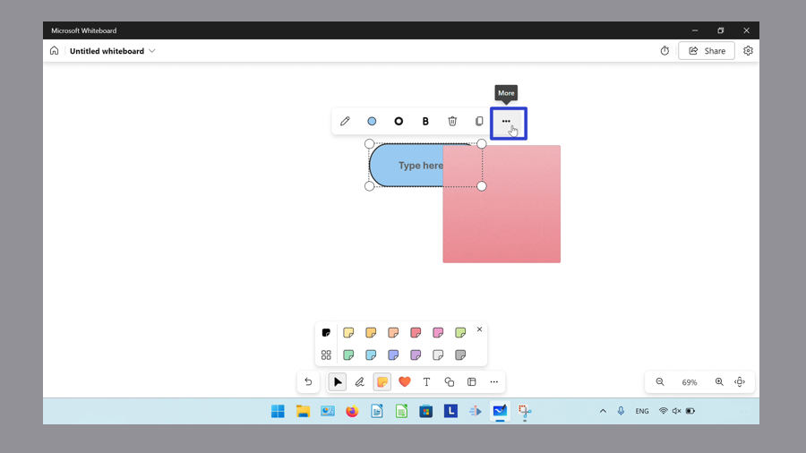
- Step 2: In the menu that opens, click “Bring to Front”. 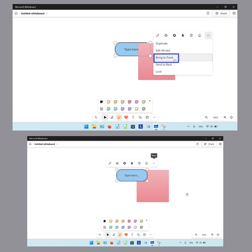
How to Bring an Object Forward With Keyboard
- Step 1: Select an object. On the keyboard press Ctrl + Shift + ]. 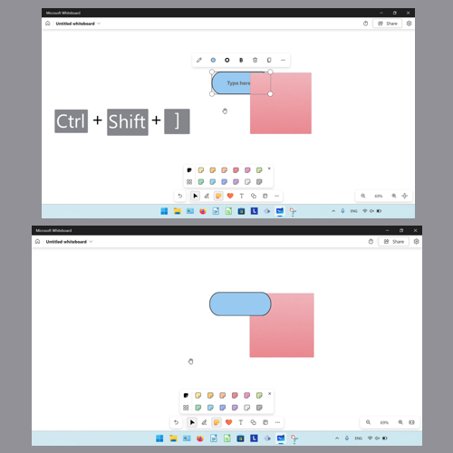
How to Send an Object Backward With Click
- Step 1: First select an object, and in the menu that opens click the “More” or “…” button. 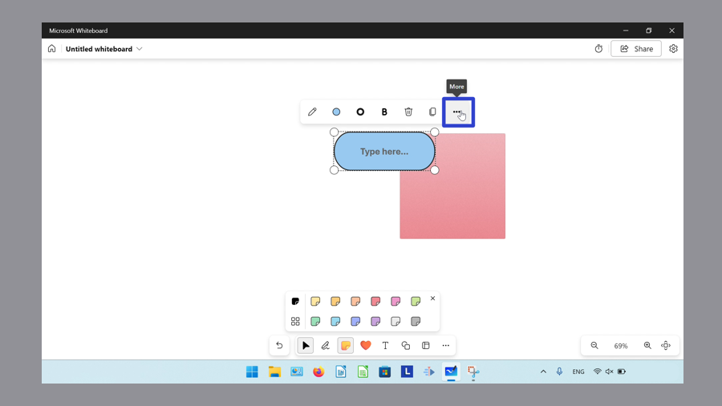
- Step 2: In the menu that opens, click “Send to Back”. 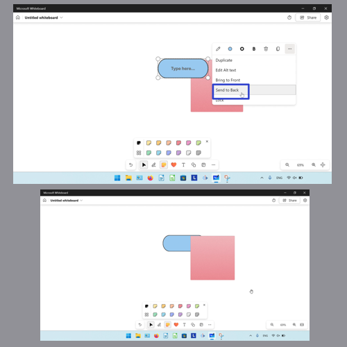
How to Send an Object Backward With Keyboard
- Step 1: Select an object. On the keyboard press Ctrl + Shift + [. 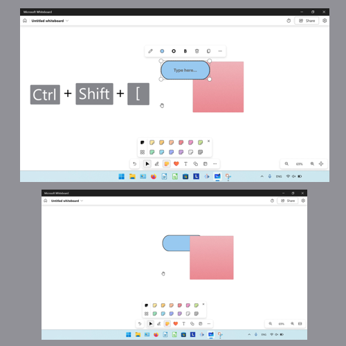
How to Lock an Object
- Step 1: First select an object, and in the menu that opens, click the “More” or “…” button. 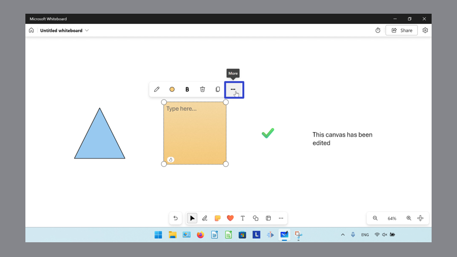
- Step 2: In the menu that opens, click “Lock”. The locked object cannot be selected, resized, moved, or deleted. 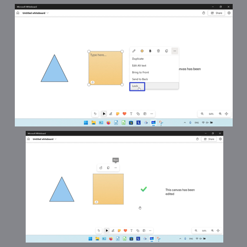
How to Unlock an Object With Click
- Step 1: Right click a locked object. 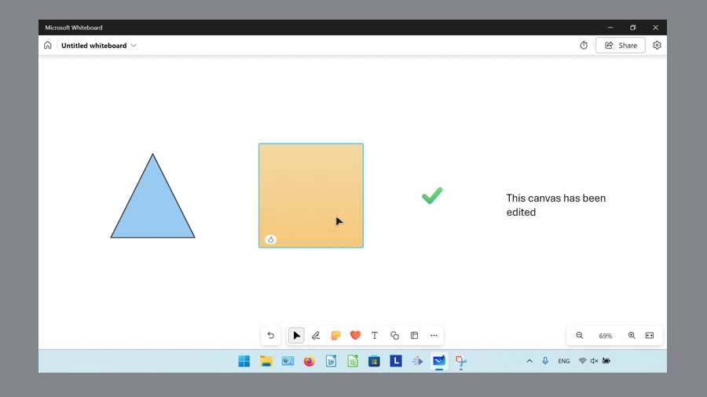
- Step 2: In the menu that opens, click “Unlock”. 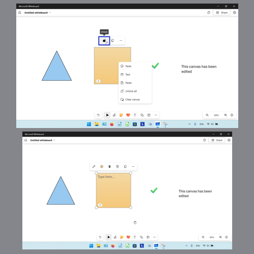
How to Unlock an Object With Right Click
- Step 1: First right click a locked object, or anywhere on the canvas.
- Step 2: In the menu that opens, click the “Unlock all” option. 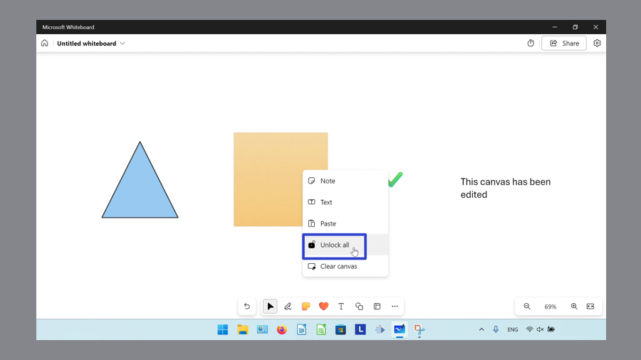
How to Unlock an Object With Keyboard
- Step 1: Press the Tab key until the keyboard focus is on the locked object. 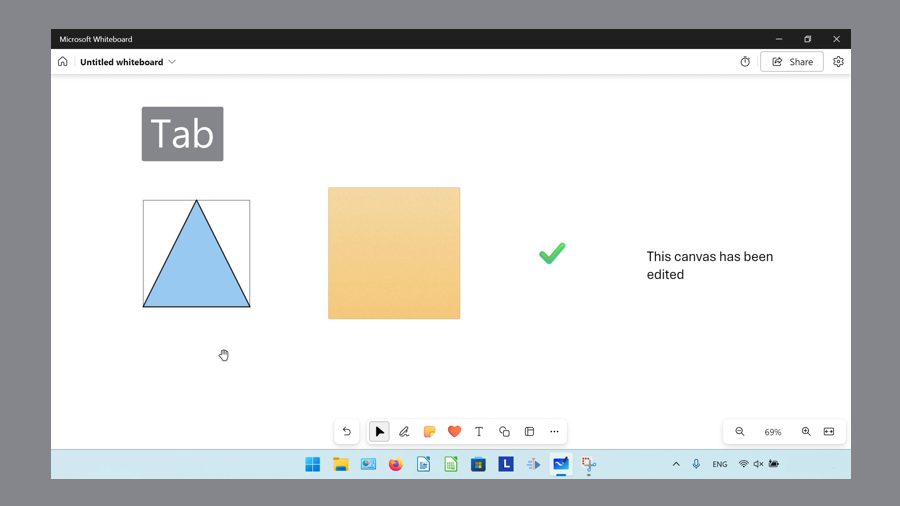
- Step 2: Press the Enter or Spacebar key, and in the menu that opens, click the “Unlock” option. 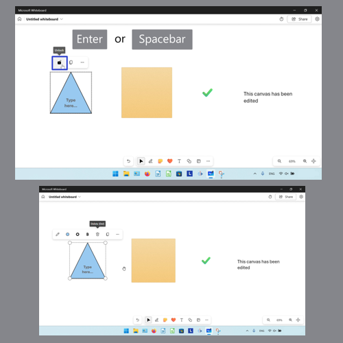
Save a copy of these instructions for later with this free tutorial PDF.